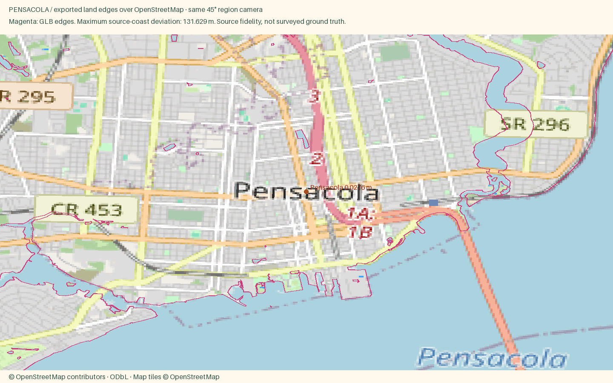
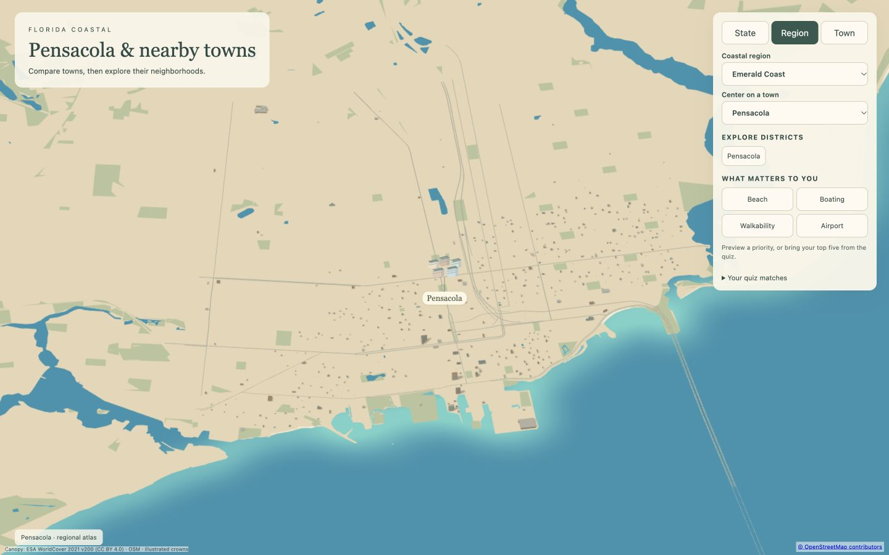
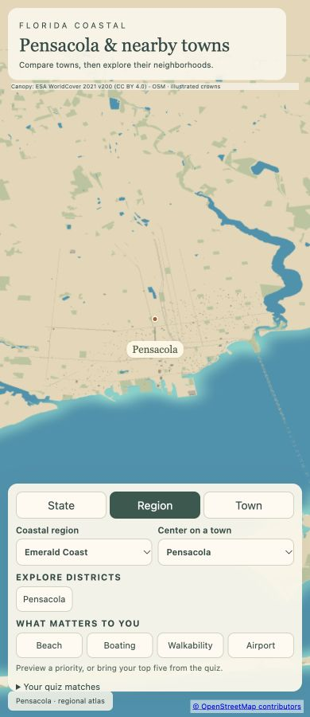

Pensacola
Open atlas · Accuracy CSV · Sourced medians
Region
Pensacola
Open districtFlorida's westernmost city, with more than 450 years of history, a lively downtown and white sand beaches across the bay.
Source alignment

Manual fixes
- City-specific package requested by user; other cities in the parent region remain unchanged.
- Separate downtown and historic-residential style zones; source canopy preserved.
- Landmark-specific recipe inputs supply missing height where documented; shared scale caps still apply.
- Input camera fitted to both geographic axes; Census background context extended to cover the wider region frame. Geometry and style implementation unchanged.
- Retained explicitly mapped closed coastline island inside generalized Pensacola Bay water polygon, which omits this small island. https://www.openstreetmap.org/way/555468911
Hero landing images
Desktop 1600 × 1000 · Phone 800 × 1000 · Source conflict audit

Responsive review

